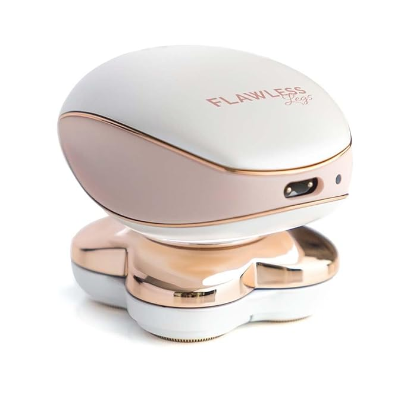

Leg Hair Remover for Women, Electric Razor with LED Light for Instant and Painless Leg Hair Removal
By: Flawless Legs, Jun 1st 2024

Introduction
Dreaming of effortlessly smooth legs without the hassle of shaving or the pain of waxing? Look no further than the Finishing Touch Flawless Legs Electric Razor. In this blog post, I'll show you why this innovative device is a must-have addition to your beauty routine. Plus, I'll share real-life testimonials to prove just how effective it is. Trust me, by the end of this, you'll be itching to get your hands on one.
Why You Need It
Let's be real—traditional hair removal methods are a pain, literally. From razor burn to ingrown hairs, they can leave your skin feeling anything but flawless. But with the Finishing Touch Flawless Legs Electric Razor, smooth, flawless legs are just a few swipes away. Say goodbye to nicks, cuts, and irritation, and hello to effortless hair removal with no fuss or mess. Whether you're prepping for a night out or just want to feel confident in your own skin, this electric razor has got you covered.
Introduction
Real-Life Testimonials: But don't just take my word for it—women everywhere are raving about the Finishing Touch Flawless Legs Electric Razor. From busy moms to beauty gurus, the reviews speak volumes. Users love how easy it is to use, with no redness or irritation afterwards. Plus, many are amazed by how smooth and soft their legs feel after just one use. It's like having a salon-quality treatment in the comfort of your own home, and at a fraction of the cost.
Introduction
Why Wait? Ready to experience the magic of the Finishing Touch Flawless Legs Electric Razor for yourself? Grab your https://amzn.to/3V4hnBn today and say goodbye to shaving woes for good. Trust me, once you try it, you'll wonder how you ever lived without it.